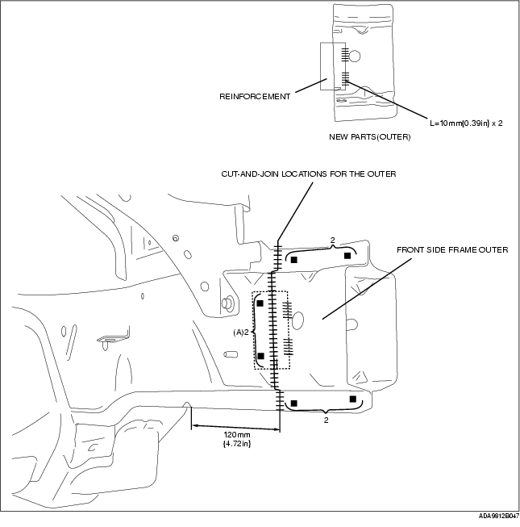

1. Make reinforcement panel using the material of the front side frame.
2. To cut-and-join the new part, cut at the locations indicated in the figure below and bevel the cut-and-join locations of the new parts.
3. When installing new parts, position each part so that the section measurement aligns to the body dimension.
4. To install the inner, trial-fit the new and old parts, weld the old parts and the reinforcement, and then weld the new parts.
5. Because the outer cannot be welded to the old parts from the inside of the frame, drill 2 plug weld holes at the locations indicated by (A) on the old parts. Install the reinforcement and the old parts by plug welding from the outside of the frame, then weld the new parts.
6. Grind each joined location on the inner and outer with a disk grinder, then finish process the surface.
